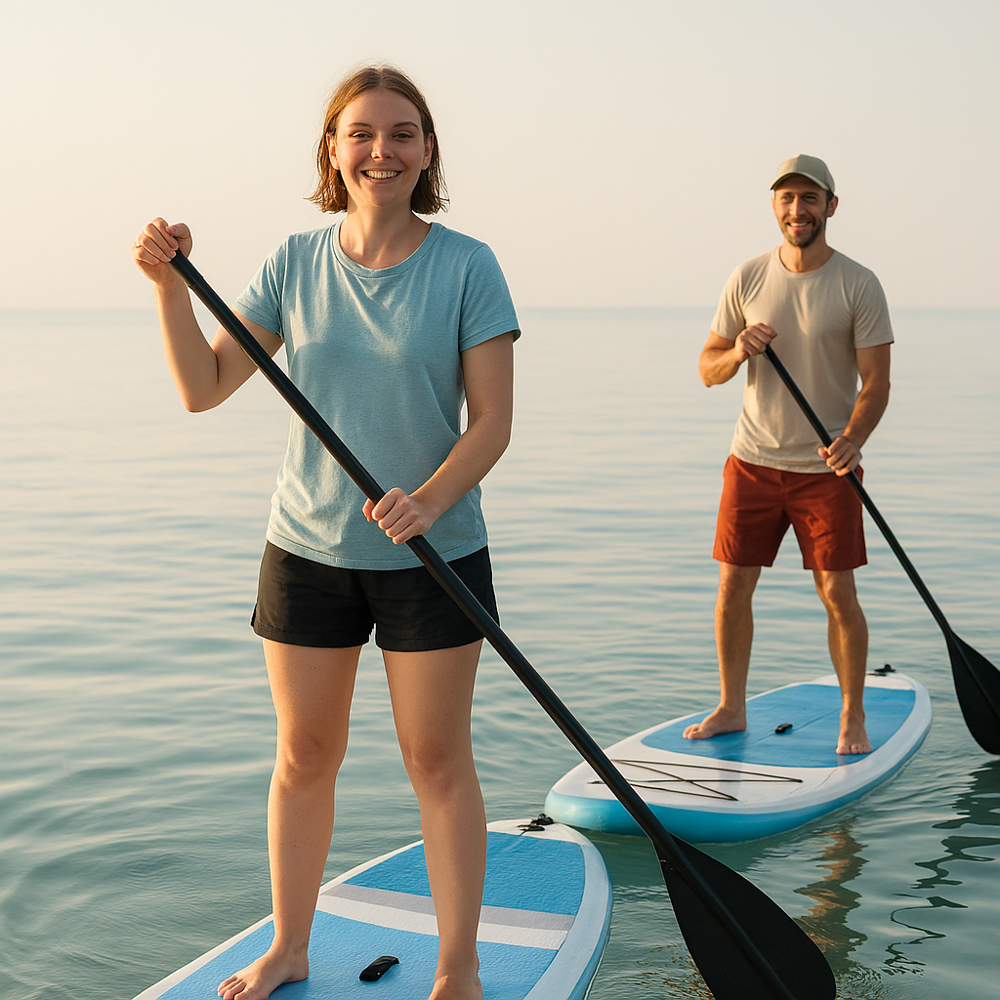
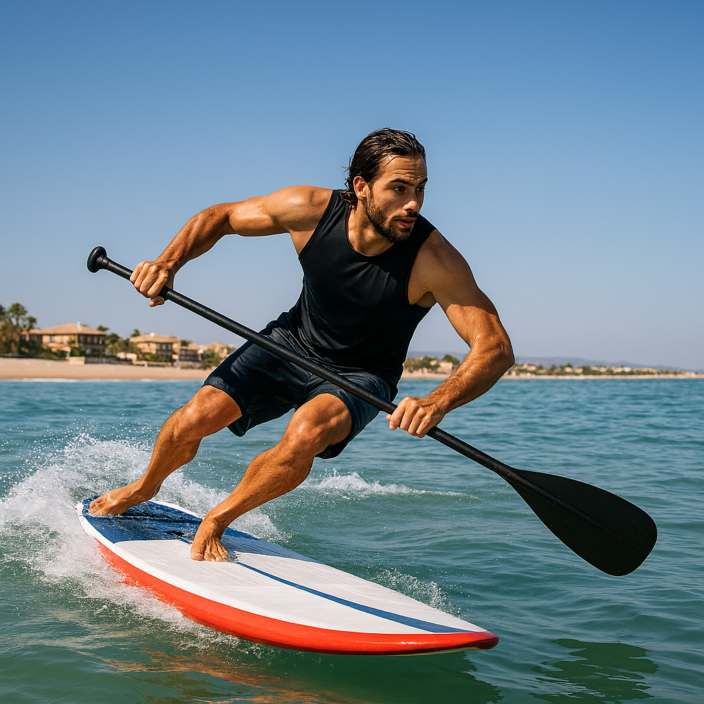
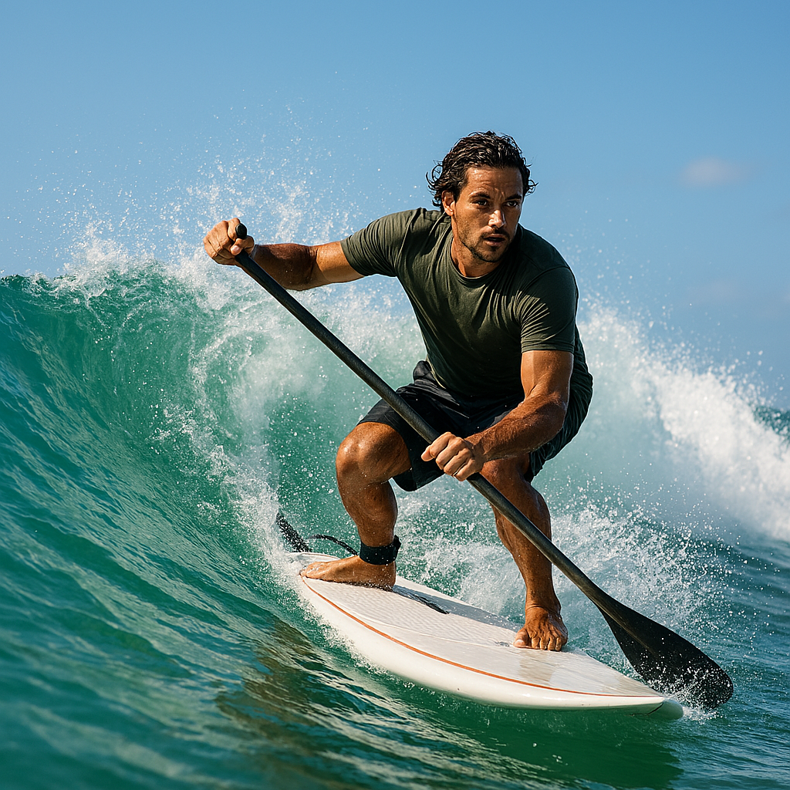

Nuestros cursos de SUP están dirigidos a todas las edades y niveles: desde la iniciación más básica hasta el perfeccionamiento técnico y la práctica del surf. Aprende en un entorno seguro, divertido y rodeado de naturaleza.

Te enseñaremos todo para empezar a practicar SUP. Desde el primer día te mantendrás de pie sobre la tabla, aprenderás a controlar tu equilibrio y dominarás las técnicas básicas de remada.
Este módulo se realiza en agua plana, siempre buscando las mejores condiciones de mar y viento.

En este nivel aprenderás diferentes tipos de giros, perfeccionamiento de remada y cómo moverte por la tabla con seguridad.
Ideal para quienes ya han probado el SUP y quieren avanzar.

Aquí damos el salto hacia el surf: conocimiento de olas, viento y mareas, sincronización de remada y técnicas de salida en olas.
Este será tu nivel de iniciación al SUP Surf.